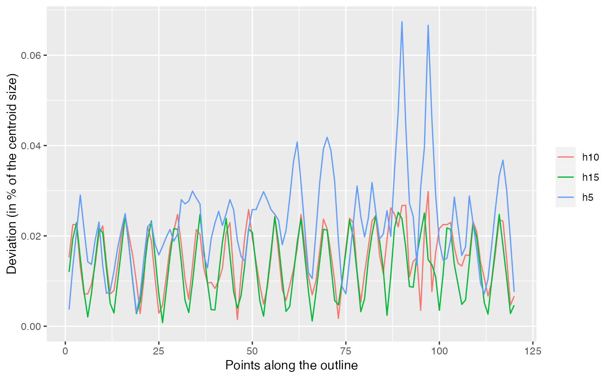
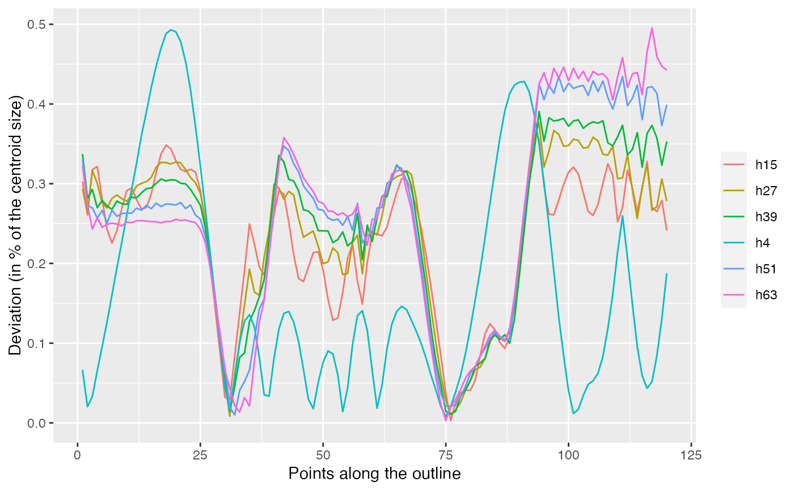

Quantitative calibration, through deviations, for Out and Opn objects
Source:R/core-calibrate.R
calibrate_deviations.RdCalculate deviations from original and reconstructed shapes using a range of harmonic number.
calibrate_deviations() calibrate_deviations_efourier(x, id = 1, range, norm.centsize = TRUE, dist.method = edm_nearest, interpolate.factor = 1, dist.nbpts = 120, plot = TRUE) calibrate_deviations_tfourier(x, id = 1, range, norm.centsize = TRUE, dist.method = edm_nearest, interpolate.factor = 1, dist.nbpts = 120, plot = TRUE) calibrate_deviations_rfourier(x, id = 1, range, norm.centsize = TRUE, dist.method = edm_nearest, interpolate.factor = 1, dist.nbpts = 120, plot = TRUE) calibrate_deviations_sfourier(x, id = 1, range, norm.centsize = TRUE, dist.method = edm_nearest, interpolate.factor = 1, dist.nbpts = 120, plot = TRUE) calibrate_deviations_npoly(x, id = 1, range, norm.centsize = TRUE, dist.method = edm_nearest, interpolate.factor = 1, dist.nbpts = 120, plot = TRUE) calibrate_deviations_opoly(x, id = 1, range, norm.centsize = TRUE, dist.method = edm_nearest, interpolate.factor = 1, dist.nbpts = 120, plot = TRUE) calibrate_deviations_dfourier(x, id = 1, range, norm.centsize = TRUE, dist.method = edm_nearest, interpolate.factor = 1, dist.nbpts = 120, plot = TRUE)
Arguments
| x | and |
|---|---|
| id | the shape on which to perform calibrate_deviations |
| range | vector of harmonics (or degree for opoly and npoly on Opn) on which to perform calibrate_deviations. If not provided, the harmonics corresponding to 0.9, 0.95 and 0.99 are used. |
| norm.centsize | logical whether to normalize deviation by the centroid size |
| dist.method | a method such as edm_nearest to calculate deviations |
| interpolate.factor | a numeric to increase the number of points on the original shape (1 by default) |
| dist.nbpts | numeric the number of points to use for deviations calculations |
| plot | logical whether to print the graph (FALSE is you just want the calculations) |
Value
a ggplot object and the full list of intermediate results. See examples.
Details
Note that from version 1.1, the calculation changed and fixed a problem. Before,
the 'best' possible shape was calculated using the highest possible number of harmonics.
This worked well for efourier but not for others (eg rfourier, tfourier) as they
are known to be unstable with high number of harmonics. From now on, Momocs uses
the 'real' shape, as it is (so it must be centered) and uses coo_interpolate
to produce interpolate.factor times more coordinates as the shape
has and using the default dist.method, eg edm_nearest,
the latter finds the euclidean distance, for each point on the reconstructed shape,
the closest point on this interpolated shape. interpolate.factor being set
to 1 by default, no interpolation will be made in you do not ask for it. Note,
that interpolation to decrease artefactual errors may also be done outside
calibrate_deviations and will be probably be removed from it
in further versions.
Note also that this code is quite old now and would need a good review, planned for 2018.
For *poly methods on Opn objects, the deviations are calculated from a degree 12 polynom.
See also
Other calibration: calibrate_harmonicpower,
calibrate_r2,
calibrate_reconstructions
Examples
b5 %>% calibrate_deviations_rfourier()#>b5 %>% calibrate_deviations_tfourier()#>b5 %>% calibrate_deviations_sfourier()#>#>o5 %>% calibrate_deviations_npoly()#>#>o5 %>% calibrate_deviations_dfourier()#>